Vanderbilt · Anchor's Edge · ATD facilitator guide · print edition
The Sponsor, the facilitator guide

Run of show
| Screen | Full (min) | Core (min) |
|---|---|---|
| Welcome / QR | 2 | 1 |
| The mission | 2 | 1 |
| The goal we are targeting | 2 | 1 |
| Objectives | 1 | 1 |
| Agenda | 1 | skip |
| Advice versus advocacy | 8 | 6 |
| Earning and asking | 10 | 7 |
| Giving it away | 9 | 6 |
| The core idea | 1 | skip |
| Recap quiz | 4 | 3 |
| Capstone commitment | 4 | 3 |
| Closing | 1 | 1 |
| Total | 45 | 30 |
The goal this month serves
Goal 1, Workforce Intelligence & Transfer Portal. Baseline 6% of BUs, Q4 target 85% of BUs.
Audience
All Vanderbilt staff in the Anchor's Edge weekly rhythm; no management experience assumed. Works for 6 to 40 on a call; breakouts run in pairs. No prerequisites; this session closes the January Retain, Grow, Move week.
Room setup
Virtual, instructor led: camera on, deck link in chat, breakouts of 2 available. Learners follow on their own screens via the welcome-slide link or QR. Nothing typed into the deck is saved or sent.
Materials
- Meeting platform with screen share and breakout rooms; deck link ready to paste in chat
- Facilitator machine with the facilitator edition open; notifications off
- Learners on their own devices with the learner link
- Chat open for share-outs; the capstone copy button pastes there cleanly
A week before
- Run the learner edition start to finish and do every interaction honestly; you will demo at least one live.
- Read this month's theme page on the Anchor's Edge dashboard so the goal tie-in is fluent.
- Send the invite with the learner link and one line on what to bring.
The day before
- Test screen share with the facilitator edition; confirm the notes rail is readable.
- Open the learner link on a second device; the QR must land there.
- Run the section interactions once so you can drive them without reading.
30 minutes before
- Welcome slide up as people join; link pasted in chat.
- Close every other tab; silence the machine.
- Breakout rooms pre-configured in pairs.
When things go sideways
If Screen share or the site fails mid-session: Paste the learner link in chat and narrate from your own browser; every interaction runs on learner devices without the share.
If Breakout rooms are unavailable: Run the breakout prompts as 60-second chat storms: everyone types their answer at once, you read the best three aloud.
If Someone names a real colleague during a breakout or share-out: Protect them warmly and immediately: 'Hold that. Roles, never names.' Advocacy is practiced in real rooms, never rehearsed with real names on a group call.
If A participant says nobody senior has ever seen their work: Point at the showing move: seen is arranged, never waited for. One finished piece of work, one walk-through, and the evidence problem is solved in thirty minutes.
Tough questions, ready answers
Q: Isn't asking someone to sponsor me just asking for favoritism?
Favoritism is backing without evidence. Sponsorship is backing built on work the sponsor has actually seen, which is why the showing comes before the ask. You are asking someone to repeat what they know firsthand, and that is how good staffing decisions get made.
Q: I am early in my career. Do I have any credibility to spend on someone else?
You have rooms: team meetings, chats, peers asking who could help. Peer advocacy is real advocacy; a name plus evidence carries weight at every level, and giving it is how you learn to earn it.
Q: What if I sponsor someone and their work disappoints?
That risk is exactly what makes sponsorship valuable, so manage it like a sponsor does: back work you have genuinely seen, be specific about what you are vouching for, and treat one miss as information rather than a reason to stop spending.
Copy-paste templates
Pre-work invite (paste into the calendar invite)
Subject: Thursday, 45 minutes on advocacy. Come with one piece of your work you are proud of, and one colleague whose work you rate highly. You will never be asked to name them. Live and interactive; have the session link open on your own screen.
7-day pulse (send one week after)
Subject: Did the advocacy move happen? Three lines, reply whenever: 1) Did the move on your card happen? 2) What did it cost, and what came back? 3) Whose name do you say in rooms they are not in?
After the session
Seven days out, send the pulse: 'Did the advocacy move on your card happen? What did it cost, and what came back? Whose name do you say in rooms they are not in?' Count of completed advocacy moves is the Level 3 metric for the month.
Welcome / QR Full 2 min · Core 1
Get everyone into the deck on their own screen and set the tone: 45 minutes, live, hands on.
Say
“Welcome to Thrive Thursday. Scan the code or click the link in chat so this session runs on your screen too. Forty-five minutes, one focus: Advocacy: mentors give you advice, sponsors spend their credibility on you.”
Do
- Slide up as people join; link pasted in chat every few minutes.
- State the norm once: type into your own screen, nothing you enter is saved or sent.
Watch for: People lurking without the deck open. The interactions only land if the deck is on their screen.
Transition: “Before the topic, thirty seconds on why Vanderbilt is asking for this hour.”
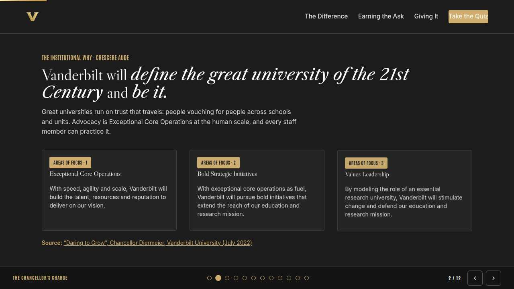
The mission Full 2 min · Core 1
Anchor the session in the Chancellor's charge so the next 40 minutes read as mission work, not admin.
Say
“This year of learning hangs off one sentence from the Chancellor: Vanderbilt will define the great university of the 21st Century and be it. Great universities run on trust that travels: people vouching for people across schools and units. Advocacy is Exceptional Core Operations at the human scale, and every staff member can practice it.”
Do
- Read the mission line slowly, once.
- Point at the tie-in line and let it sit; no discussion needed here.
Transition: “That is the why. Here is the number we are moving.”
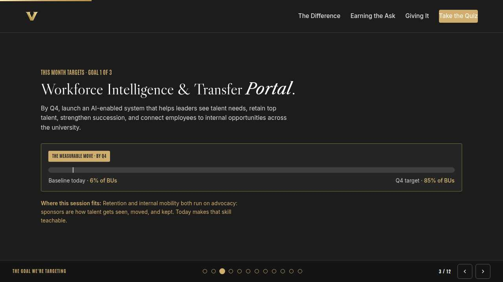
The goal we are targeting Full 2 min · Core 1
Name the enterprise goal this month serves and the measurable move it needs.
Say
“Every month of Anchor's Edge lands on one of three enterprise goals. This month is Goal 1, Workforce Intelligence & Transfer Portal: By Q4, launch an AI-enabled system that helps leaders see talent needs, retain top talent, strengthen succession, and connect employees to internal opportunities across the university. Today's baseline is 6% of BUs; the Q4 target is 85% of BUs. Retention and internal mobility both run on advocacy: sponsors are how talent gets seen, moved, and kept. Today makes that skill teachable.”
Do
- Let the meter animate before you speak to the number.
- One line, not a lecture: this session is one of the moves that closes the gap.
Transition: “Here is what you will be able to do in 45 minutes.”
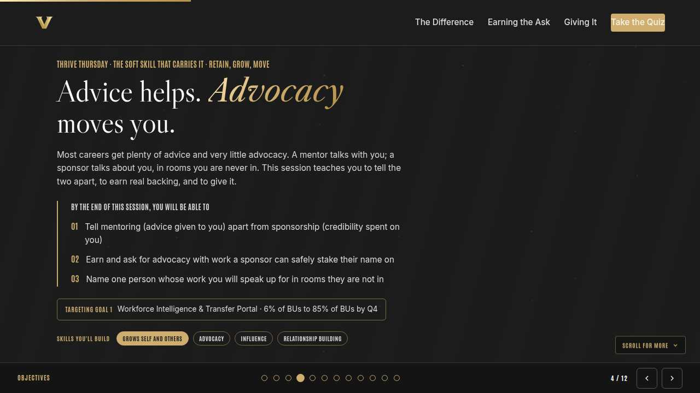
Objectives Full 1 min · Core 1
Set the contract for the session in under a minute.
Say
“By the end of this session: tell mentoring (advice given to you) apart from sponsorship (credibility spent on you); earn and ask for advocacy with work a sponsor can safely stake their name on; name one person whose work you will speak up for in rooms they are not in. That is the whole contract.”
Do
- Read the three objectives briskly; do not elaborate yet.
Transition: “Three stops to get there.”
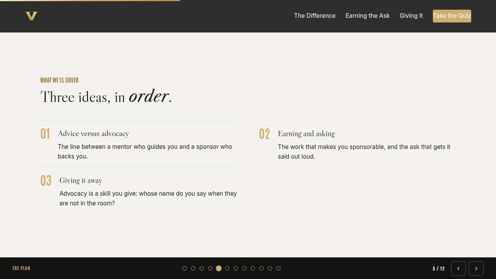
Agenda Full 1 min · Core skip
Show the path so the room can pace itself.
Say
“Three stops: advice versus advocacy, earning and asking, giving it away. Each one has something to play with, so keep the deck open.”
Do
- Point once at each stop; ten seconds each.
Transition: “Stop one.”
Core path: Core: skip the read-through, gesture at the slide in passing.
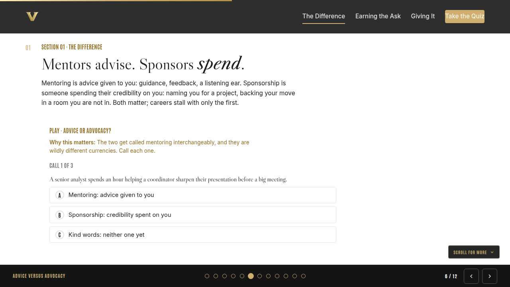
Advice versus advocacy Full 8 min · Core 6
Install the distinction: mentoring is advice given to you, sponsorship is credibility spent on you.
Say
“Think about the best career help you ever got. For most of us it was advice: a mentor, a coach, someone generous with guidance. Advice matters, and careers rarely move on advice alone. They move when somebody says your name in a room you are not in and stakes a little of their own reputation on it. That second thing has a name: sponsorship. People who cannot tell the two apart keep asking for advice when what they need is backing.”
Do
- Run Advice or advocacy? live; everyone plays on their own screen.
- After round two, pause on the cost: what does the director risk that the helpful analyst does not?
- Run the breakout: was your last real career help advice or advocacy?
Ask
“Why do the kind words in round three feel so much like sponsorship?”
Expect:
- They are flattering
- They come from someone credible
- They sound like a prediction about your future
Respond: Right, and nothing traveled. The test is always the same: did the words reach someone with a decision to make, and did they cost the speaker anything?
Debrief: Advice is words to you. Advocacy is risk taken for you, somewhere you are not. Both are gifts; only one moves careers on its own.
Watch for: People concluding mentors are worthless. Keep both currencies valuable: advice builds the work, advocacy moves it.
Transition: “So how do you get sponsored? You earn it, then you ask. That is next.”
Core path: Core: run the trainer, skip the breakout, take one voice on the ask question.
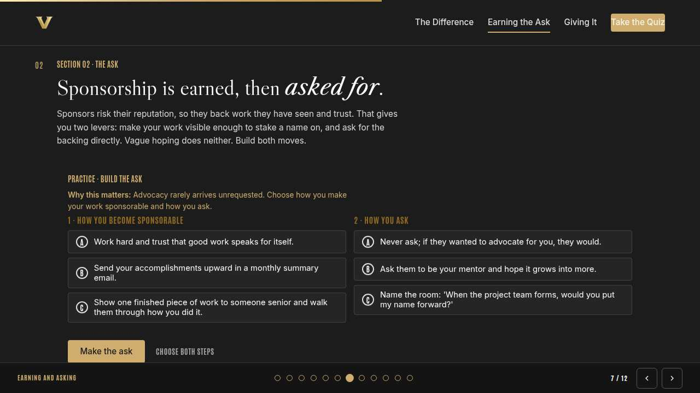
Earning and asking Full 10 min · Core 7
Give everyone a concrete path to sponsorship: visible finished work plus a specific, bounded ask.
Say
“Sponsorship sounds like something that happens to lucky people. It is closer to a transaction with two halves. A sponsor spends reputation, so they need evidence: work they have seen up close. And sponsors are busy, so they need the ask said out loud, with a room attached. Show the work, name the room. People who do both get backed at rates that look like luck from the outside.”
Do
- Run Build the ask; two minutes for both choices, then run it.
- Ask one volunteer to read their outcome aloud, weak or strong.
- Point at the pattern: evidence a sponsor can repeat, an ask with a room attached.
Ask
“What makes the direct ask feel so hard?”
Expect:
- It feels like begging for favors
- Fear of hearing no
- Not knowing whom to ask
Respond: Reframe it: a specific, bounded ask is easy to grant and easy to decline, which makes it respectful in both directions. The vague hope is the real imposition.
Debrief: Sponsorable means seen: one finished piece of work, walked through. Asked means named: this room, this chance, my name.
Watch for: People whose ask is really a promotion request. Keep the ask pointed at a specific room or chance, never a title.
Transition: “You know how to receive it. The last section flips it: you have credibility to spend too.”
Core path: Core: everyone runs the builder solo; skip the read-aloud.
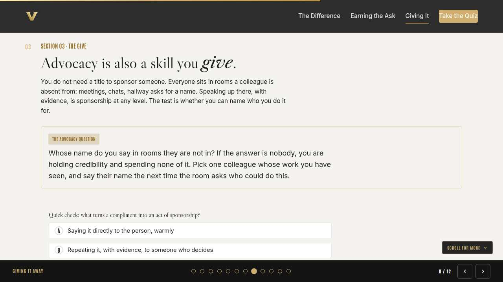
Giving it away Full 9 min · Core 6
Land the advocacy question and get every person to name, role only, who they advocate for.
Say
“Here is the part that makes advocacy an everyone skill and never a perk of rank. You sit in rooms other people are absent from every week. When someone asks who could take this on, you have a name you could say and evidence you could attach. Most of us hold that credibility and spend none of it. So the question this section leaves you with is simple: whose name do you say in rooms they are not in?”
Do
- Read the concept card aloud; let the advocacy question sit for a beat.
- Run the knowledge check; everyone answers on their own screen.
- Run the breakout: who have you spoken up for lately, roles only; an honest nobody counts.
Ask
“Who advocated for you at some point, and did you know it at the time?”
Expect:
- Most found out later or never
- A few can name the exact moment
- Some are realizing it right now, on the call
Respond: That delay is the signature of real sponsorship: it happens where you are not. Someone on this call is that unseen person for a colleague. Be them on purpose.
Debrief: Advocacy at any level: a name, the work you have seen, a room where it counts. If your answer to the question is nobody, pick someone this week.
Watch for: Names slipping out in the breakout. Warmly enforce roles only; even praise stays roles-never-names on a group call.
Transition: “Quick recap, then your advocacy card.”
Core path: Core: skip the breakout; ask for advocacy question answers in chat, roles only.
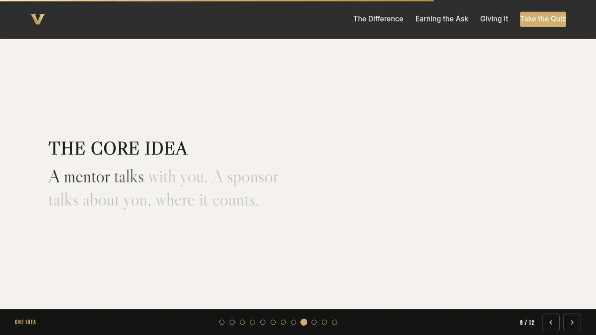
The core idea Full 1 min · Core skip
Land the one sentence the session exists to install.
Say
“If you keep one sentence from today, this is it. Read it once, out loud: A mentor talks with you. A sponsor talks about you, where it counts.”
Do
- Pause two beats after reading; the word animation carries it.
Transition: “The recap makes it stick.”
Core path: Core: pass through in stride; the sentence reads itself.
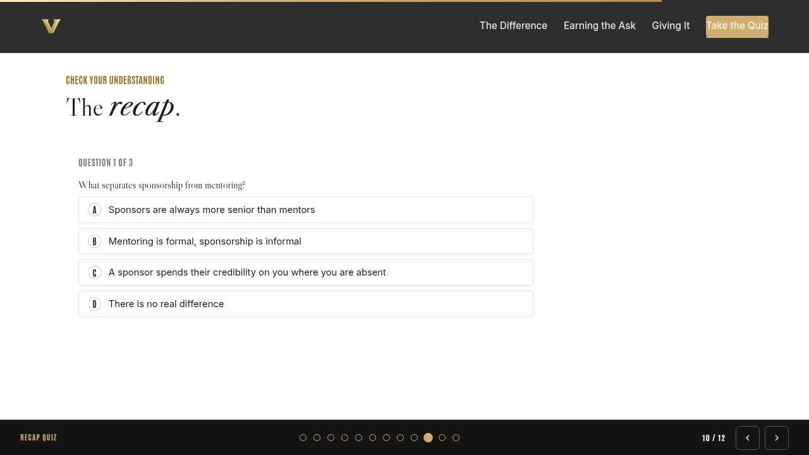
Recap quiz Full 4 min · Core 3
Score the learning while it is fresh; wrong answers are teaching moments, not failures.
Say
“Three questions, on your own screen. Answer honestly; the explanations are where the learning sticks.”
Do
- Give the room 90 seconds to run it individually.
- Ask for a show of results in chat: how many got 3 of 3?
- Read out the explanation for whichever question drew the most misses.
Watch for: Rushing past the why lines. The explanations carry the teaching.
Transition: “Now point it at your real week.”
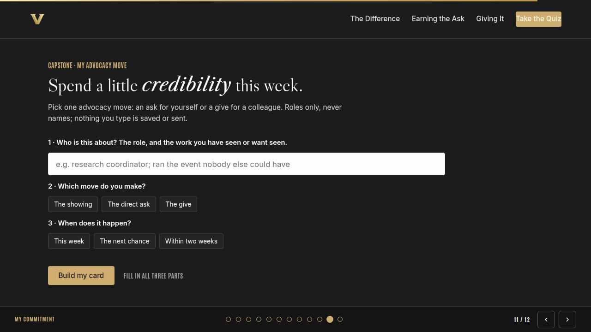
Capstone commitment Full 4 min · Core 3
Convert the session into one named, dated action per person.
Say
“Now make it real. One move: the showing, the ask, or the give. The role and the work, never a name. Build the card, pick the window, and copy it somewhere you will see it before Friday. Two minutes, quiet, go.”
Do
- Two quiet minutes; everyone builds their own card.
- Invite two or three volunteers to read their card aloud or paste it in chat.
- Remind: copy the card somewhere you will see it this week.
Watch for: Vague entries. Nudge for a name-able situation and a real date.
Transition: “Last slide.”
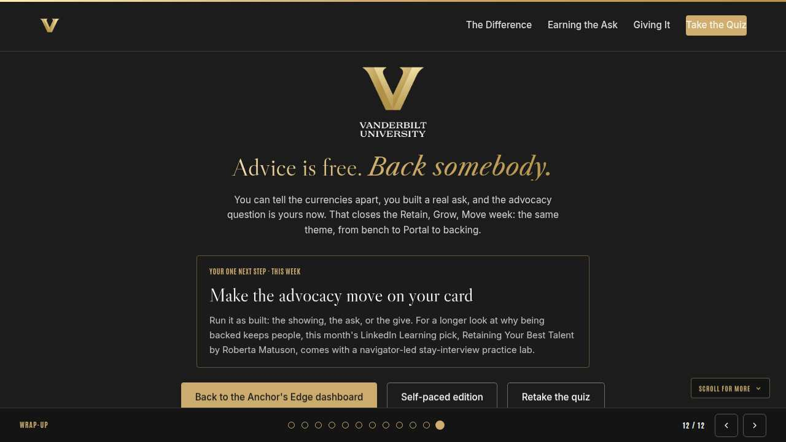
Closing Full 1 min · Core 1
End with the next step and where this thread continues.
Say
“That closes the Retain, Grow, Move week: Monday gave managers the bench, Tuesday made you findable for the Transfer Portal, and today gave everyone the human engine under both, advocacy. Make your move this week. If you want more on what keeps people, the LinkedIn Learning course Retaining Your Best Talent by Roberta Matuson, with its navigator-led stay-interview practice lab, runs all month. Next week Anchor's Edge rolls into February: a fresh Manager Monday, same rhythm, new theme.”
Do
- Point at the next-step card; one sentence.
- Name the rest of the week's rhythm: the other sessions echo this month's theme.
Generated from facilitator/notes.json. The on-screen facilitator edition lives at ./ alongside this guide.